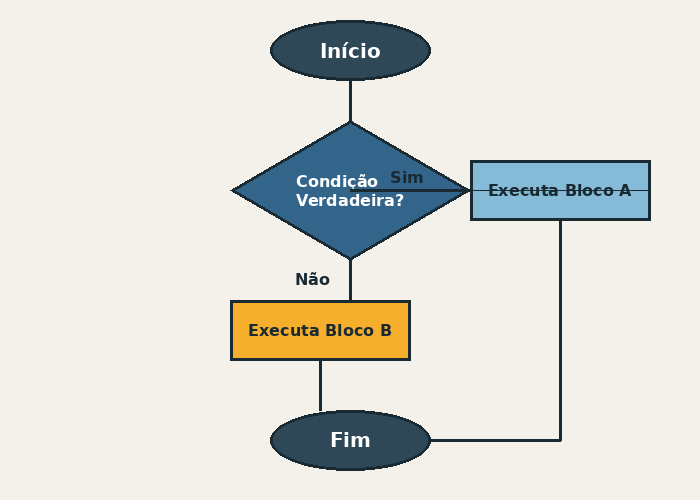
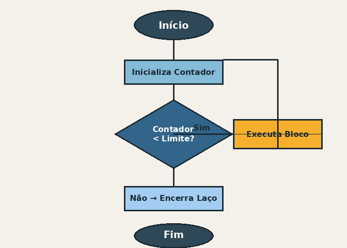

Variáveis e Tipos de Dados
Variável é um espaço na memória do computador que guarda um valor que pode mudar durante o programa. Cada variável tem um nome e um tipo de dado. Os tipos de dados mais usados são:
- Inteiro (int)
- Decimal (float)
- Texto (string)
- Verdadeiro ou falso (booleano)
Estruturas de Decisão
As estruturas de decisão servem para o programa escolher um caminho dependendo de uma condição. A mais usada é o "se... senão". Alguns exemplos de estruturas de decisão:
- Se (if)
- Se... senão (if... else)
- Escolha múltipla (switch)
Tabela de Estruturas
| Estrutura | Tipo | Quando usar |
|---|---|---|
| if / else | Decisão | Quando precisa testar uma condição |
| switch | Decisão | Quando tem vários valores fixos pra testar |
| for | Repetição | Quando já sabe quantas vezes vai repetir |
| while | Repetição | Quando repete até uma condição parar de ser verdadeira |
| Tabela feita por mim com base no conteúdo estudado | ||
Estruturas de Repetição
As estruturas de repetição (ou laços) servem para repetir um trecho de código várias vezes sem precisar escrever ele de novo. As duas mais comuns são o for e o while.
Algoritmos e Fluxogramas
Um algoritmo é uma sequência de passos para resolver um problema. Antes de programar, muita gente desenha um fluxograma pra organizar as ideias. Abaixo tem dois exemplos que eu fiz:
Imagens dos fluxogramas


(clique na segunda imagem se quiser aprender mais sobre fluxograma)
Vídeo
Coloquei um vídeo do YouTube que explica melhor o assunto:
Formulário de Contato
Se tiver alguma dúvida, pode preencher o formulário abaixo: